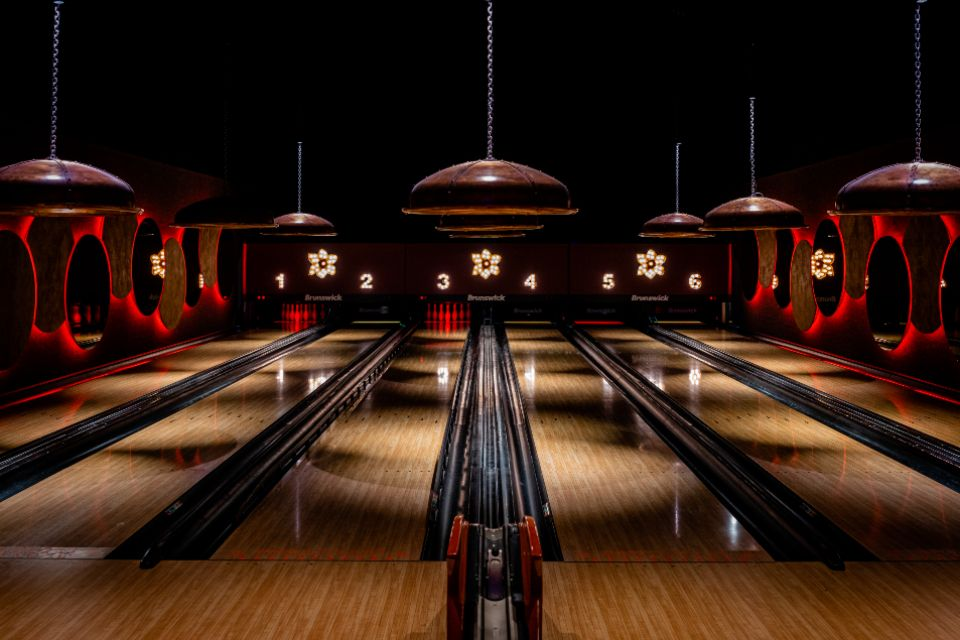

Bowling and games · Old Street
Roxy Ball Room, Old Street
- Duck pin bowling, tech darts, tech shuffle and karaoke are each £14 per person, with American pool at £24 per hour for the table.
- Booking more than one activity together brings the price down: £21pp for two activities, £28pp for three.
- An over-18s venue with duck pin bowling, American pool, tech darts, tech shuffle, karaoke and a basketball court under one roof.

Photo of bowling, not this specific venueWhat is Roxy Ball Room, Old Street?
Roxy Ball Room, Old Street is a multi-activity games bar in Shoreditch. Duck pin bowling, American pool, tech darts, tech shuffle and karaoke can all be booked individually or mixed together, and there's a basketball court on site as well. Food is American-style: pizzas, burgers and wings, with a full bar of cocktails, draught beer and cider alongside.
How does it work?
Duck pin bowling is priced per person, per game. Karaoke, tech darts and tech shuffle are priced per person, per hour. American pool is priced per table, per hour, rather than per person, so the cost splits further across a bigger group.
Booking two or three activities together through Mix & Match brings the per-person price down. The activity you want most has to be the one you book first, since that's what unlocks the discount on the rest. There's a cap of 10 people per pool table or tech darts board, and karaoke on Saturdays needs a minimum of four people. Mix & Match bookings run for groups of two to thirty.
How much does it cost?
Each activity has its own standard rate if you're booking just one thing.
| Activity | Price |
|---|---|
| Duck pin bowling | £14 per person, per game |
| Karaoke | £14 per person, per hour |
| Tech darts | £14 per person, per hour |
| Tech shuffle | £14 per person, per hour |
| American pool | £24 per hour, per table |
Per the venue's published rates. Verified September 2026.
Mix & Match pricing
| Activities booked together | Price |
|---|---|
| Two activities | £21 per person |
| Three activities | £28 per person |
Per person, for the whole visit. Available for groups of 2 to 30.
What that means in practice
- Two hours of tech darts and tech shuffle booked separately: £28pp (£14 each). The same two activities as a Mix & Match package: £21pp, a saving of £7 a head.
- Adding a third activity, like karaoke, under three-activity Mix & Match: still £28pp, the same as booking just two activities separately. If you're already booking two, the third is effectively free.
- American pool doesn't fit the same maths, since it's priced per table rather than per person. A full table of ten for the hour works out at £2.40 a head.
What is the food and drink like?
Food covers American-style pizzas, burgers and chicken wings, with sides to share. The bar has cocktails, draught beer and cider, and mocktails alongside soft drinks.
How do you get there?
Get directions on Google Maps ↗
241 Old Street, London EC1V 9EY. It's within walking distance of both Old Street and Shoreditch High Street stations.
There's a ground-level entrance with a lift down to the lower floor, and two accessible toilets. Duck pin bowling has a step up to the lane area; a portable ramp is available, though the step itself is fairly steep. The rest of the games are on flat surfaces.
How do you book?
Bookings for individual activities and Mix & Match packages go through Roxy's online booking system. Decide on your priority activity before you start, since it's the first one you book that qualifies the visit for the Mix & Match discount.
Common questions
- How much does it cost at Roxy Ball Room, Old Street?
- Duck pin bowling is £14 per person per game. Karaoke, tech darts and tech shuffle are each £14 per person per hour. American pool is £24 per hour for the table. Booking two activities together as a Mix & Match package is £21 per person, and three is £28 per person.
- Where is Roxy Ball Room, Old Street?
- 241 Old Street, London EC1V 9EY, within walking distance of Old Street and Shoreditch High Street stations.
- Is Roxy Ball Room, Old Street over-18s only?
- Yes, it's an over-18s venue throughout opening hours.
- What is Mix & Match?
- A discount for booking more than one activity in the same visit: £21 per person for two activities, £28 per person for three. The first activity you book has to be the one you want to prioritise, since that's what qualifies the booking for the discount.
- Is Roxy Ball Room, Old Street accessible?
- There's a ground-level entrance with a lift down to the lower floor, and two accessible toilets. Duck pin bowling has a step up to the lane area with a portable ramp available, though the step itself is fairly steep.
You might also like
Similar venues in London